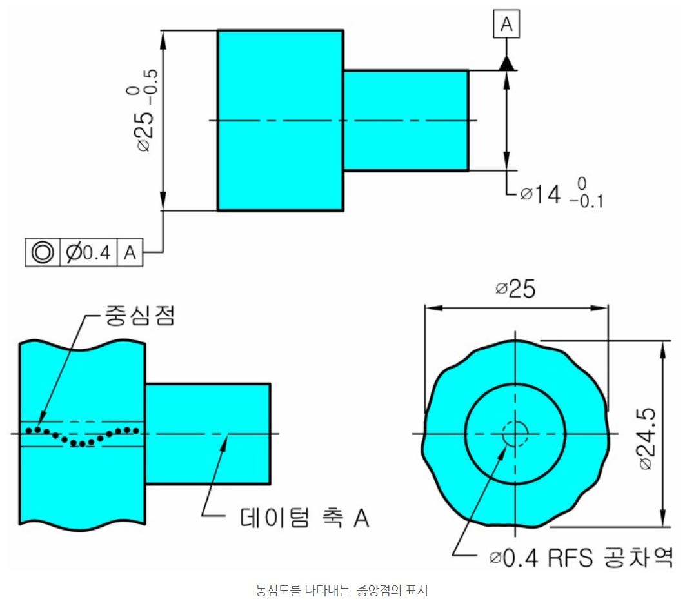
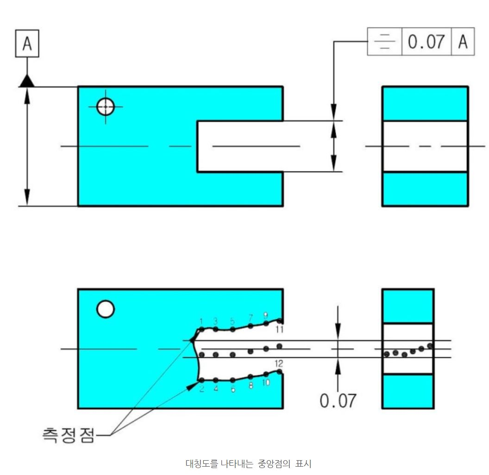

Ref : https://blog.naver.com/gtec4724/222165546125


대칭도 공차를 적용하는 부품도 몇가지 고유한 기능에서만 사용되었다. 대칭도는 기능의 주요 고려사항이 부품의 정확한 균형, 동일한 벽두께 또는 부품 질향의 동일한 분포를 요구하는 경우에 사용되었다.
동심도는 원통 형체에 적용해 왔고 대칭도는 평행 평면 형체에 적용하였다.
대칭도는 평행 평면 형체에 적용하는 동심도의 확장판으로 생각 할 수 있다.
[출처] 동심도와 대칭도의 관계는, 이제는 위치도로?|작성자 gtec4724
ASME에서 역사속으로 사라진 동심도와 대칭도!!
미국은 사실상 2009년부터 도면에서 동심도와 대칭도를 거의 사용하지 않았습니다.
2009년 ASME Y 14.5 표준 개정시에 동심도와 대칭도에는 MMC(Ⓜ)를 사용하지 못하게 하였고 Ⓜ를 사용하고 싶은 경우에는 위치도를 사용하도록 하여 사실상 10여년간 경과조치를 두었던 것입니다.
동심도 공차와 대칭도 공차 대신에 위치도 공차를 적용하는 것이 좋습니다.